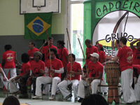

Objectifs de Quilombo vivo.
En raison du développement grandissant de la Capoeira en France, il semblait important, afin de répondre aux envies et besoins de la demande, d’offrir de nouvelles possibilités de choix et d’activités aux élèves actuels et futurs.
Quilombo Vivo, est une association de capoeiriste, mais pas seulement.
Elle a pour objectif de promouvoir un peu plus la culture brésilienne et notamment par la musique.
Notre association est affiliée au groupe Arte Negra, mais peut-être, grâce à vous, deviendra t’elle une grande force du monde de la capoeira, avec son propre baptême (passage de grades, c’est l’événement le plus important d’une saison) et sa notoriété, afin d’enrichir la culture Bordelaise aux cotés de sa grande sœur Arte Negra.
